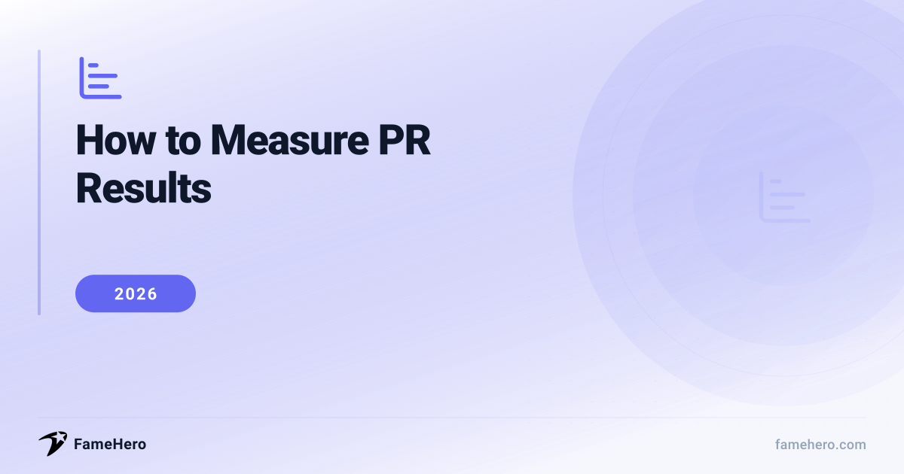

How to Measure PR Results in 2026 (Demonstrate Tangible ROI)

Why Measuring PR Results Matters in 2026
In 2026, demonstrating PR's tangible ROI is vital for securing investment, especially with budget constraints and AI's rise. Businesses often face challenges like misaligned goals, limited resources, and a continued focus on vanity metrics over actual business impact. Connecting PR efforts to revenue and growth remains a significant hurdle for many.
This guide offers a clear, step-by-step approach to evaluating PR success. You will find practical advice for overcoming measurement obstacles and a curated list of key software tools to simplify your PR measurement process.
Want results faster? Get published from $49
FameHero guarantees media placements on real news sites. See what's possible with a free scan.
How to Measure PR Results in 2026
How to Measure PR Results in 2026
- Define Clear, Business-Aligned Goals: Before launching any PR activity, establish specific, measurable, achievable, relevant, and time-bound (SMART) goals that directly support overarching business objectives. This ensures your PR efforts are strategic and not just a series of disconnected activities. For example, a goal could be to increase website traffic by 15% from earned media placements in Q3, or to secure 10 high-authority backlinks from industry publications within six months to improve SEO.
- Identify Key Performance Indicators (KPIs) Aligned with Goals: Once goals are set, determine the specific metrics that will indicate success. In 2026, this moves beyond simple media mentions to include metrics like website traffic and conversions driven by PR coverage, the number and quality of backlinks generated, social media engagement stemming from press features, and AI-driven visibility. For instance, if your goal is brand awareness, a KPI could be the increase in branded search queries following a major media placement.
- Implement Robust Monitoring and Data Collection: Utilize advanced PR software and tools to track mentions across news outlets, blogs, social media, and AI platforms. Tools like Cision, Muck Rack, Meltwater, and Buzzsumo can help aggregate this data. This step is crucial for understanding not only where your brand is being mentioned but also the context and sentiment surrounding those mentions, providing a comprehensive view of your PR impact. For example, monitoring tools can alert you to both positive and negative sentiment in real-time, allowing for swift crisis management.
- Analyze Coverage Quality and Impact: Go beyond quantitative metrics like the volume of placements. Assess the quality of coverage by evaluating factors such as the authority and relevance of the publication, message pull-through (ensuring key messages are communicated effectively), and sentiment analysis. In 2026, AI-generated visibility and the impact on AI Overviews are also becoming critical considerations. For example, a placement in a highly respected industry journal with a strong backlink is more valuable than multiple mentions in less authoritative sources.
- Connect PR Efforts to Business Outcomes: The most critical step in 2026 is demonstrating PR's direct contribution to business objectives, such as lead generation, sales, or brand authority. This involves tracking metrics like qualified leads attributed to PR efforts or the estimated monetary value of coverage. For instance, by using UTM parameters on links in press releases or tracking referral traffic in Google Analytics, you can directly attribute website visits and subsequent conversions to specific PR activities.
- Regularly Report and Optimize: Establish a consistent reporting cadence (monthly or quarterly) to share insights with stakeholders, focusing on how PR activities are driving business value. Use the data gathered to refine your strategy, identify what's working, and pivot away from tactics that aren't delivering results. For example, if social media engagement metrics are consistently low for a particular type of content, reallocate resources to more effective channels or content formats.
Pro Tips for Measuring PR Results
- Track Media Mentions Beyond Reach: Don't just count clips. Analyze the sentiment and key message pull-through for each mention. Did the coverage align with your objectives?
- Benchmark Against Competitors: Regularly monitor competitor media coverage. This provides context for your own results and identifies potential opportunities or threats.
- Measure Share of Voice (SOV): Calculate your brand's SOV within your industry. This helps understand your visibility relative to competitors and track progress over time.
- Avoid Vanity Metrics: Resist the urge to focus solely on likes or impressions if they don't translate to business outcomes. Tie PR efforts to tangible results like website traffic or lead generation.
- Quantify Website Traffic & Leads: Use UTM parameters to track referral traffic from earned media placements. Monitor how many leads or conversions originate from these sources.
- Don't Forget Qualitative Feedback: While quantitative data is crucial, also gather qualitative insights from sales teams, customer service, and social listening to understand the *impact* of PR.
- Mistake to Avoid: Inconsistent Tracking: Establish a clear, consistent methodology for tracking metrics from the outset. Sporadic or changing methods make year-over-year comparisons impossible.
5 Ways to Measure PR Results Using Platforms
FameHero
famehero.comBudgetBusinesses, founders, executives, creators, and personal brandsStarting at $49 per placementFameHero is a brand visibility platform that enhances how your brand appears across search, media, and AI discovery. It focuses on building credibility through strategically placed, human-written articles on authoritative sites. FameHero aims to drive measurable improvements in visibility metrics, leading to increased search rankings, brand recall, and long-term customer trust.
StrengthsOffers a unique blend of AI analysis for identifying opportunities and human expertise for content creation and placement, focusing on long-term discoverability and SEO benefits.Best forOrganizations looking to build credibility and improve search visibility through authoritative placements.Not ideal forOrganizations seeking traditional media relations or immediate, high-volume press release distribution without a focus on content authority.Meltwater
meltwater.comEnterpriseEnterprise communications teams, marketing and social teamsContact for pricingMeltwater is a comprehensive media intelligence platform that monitors and analyzes earned media coverage across news, print, broadcast, podcasts, and social media. It provides real-time insights into brand mentions, sentiment, and message penetration, enabling faster responses to trends and risks.
StrengthsExtensive global coverage, real-time dashboards, sentiment analysis, and custom scoring features allow for detailed and tailored PR measurement.Best forEnterprise communications teams and marketing/social teams needing robust media intelligence and analysis.Not ideal forUsers who need a simple, free tool for basic mention tracking; Meltwater is a robust, enterprise-level solution.Cision
cision.comEnterpriseLarge PR teams and agenciesStarting at $10,000/yr (estimated)Cision offers an extensive suite of tools for PR and marketing teams, including media monitoring, influencer outreach, and advanced reporting features. It helps users track crucial news coverage and gain valuable insights into campaign performance.
StrengthsComprehensive PR software suite with a vast media database and integrated press release distribution through PR Newswire.Best forLarge PR teams and agencies needing a full-service PR software suite with extensive media reach.Not ideal forSmall businesses or individuals looking for a more budget-friendly or streamlined solution; Cision is a powerful, enterprise-focused platform.Muck Rack
muckrack.comPremiumPublic relations professionals, brands, agencies, and journalistsStarting at $5,000/yr (estimated entry-level)Muck Rack is an AI-powered public relations management platform that consolidates media research, journalist outreach, monitoring, and measurement into a single system. It focuses on data integrity and workflow continuity to measure earned media impact.
StrengthsStrong journalist discovery, automated coverage tracking, and a clean user interface, with a journalist-first approach.Best forPublic relations professionals and agencies focused on earned media tracking and journalist relationship management.Not ideal forTeams whose primary need is extensive social media analytics; Muck Rack is built for earned media tracking.Agility PR Solutions
agilitypr.comMid-marketPR and communications professionals, PR teams and agenciesContact for pricingAgility PR Solutions offers a comprehensive PR platform with media monitoring, targeted outreach, and analysis tools. It helps track news coverage, measure campaign success, identify influential journalists, and build customized news alerts.
StrengthsAI-powered platform with a broad range of monitoring capabilities (online, print, broadcast, social), sentiment analysis, and customizable reporting.Best forPR and communications professionals seeking an integrated PR management tool with robust monitoring and analytics.Not ideal forUsers looking for a platform solely focused on press release distribution; Agility PR Solutions is a more integrated PR management tool.
Common Mistakes to Avoid When Measuring PR Success
- Focusing solely on vanity metrics like social media followers or page views, which do not directly impact business goals or demonstrate ROI.
- Not setting clear, specific, and measurable goals for PR efforts, making accurate success measurement impossible.
- Ignoring audience engagement and the long-term impact of PR activities, focusing only on immediate coverage or reach.
- Failing to connect PR activities and metrics to broader business objectives and the bottom line.
- Over-relying on easily quantifiable but potentially misleading metrics like Advertising Value Equivalency (AVE) or sheer volume of placements.
- Neglecting competitor analysis, which limits understanding of industry trends and opportunities for improvement.